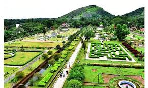

TOP DESTINATIONS

Palakkad District is one of the 14 districts of the South Indian state of Kerala. Also, it is the largest district in Kerala from 2006. The city of Palakkad is the district headquarters.
Palakkad District is one of the 14 districts of the South Indian state of Kerala. Also, it is the largest district in Kerala from 2006. The city of Palakkad is the district headquarters. Palakkad is bordered on the northwest by the Malappuram District, on the southwest by the Thrissur District, on the northeast by The Nilgiris District, and on the east by Coimbatore district of Tamil Nadu. The district is 24.4% urbanized according to the census of 2011.The district is nicknamed "the granary of Kerala". Palaklad Govt. Victoria College Entrance Palakkad is the gateway to Kerala due to the presence of the Palakkad Gap, in the Western Ghats. The total area of the district is 4,480 km2 (1,730 sq mi) which is 11.5% of the state's area which makes it the largest district of Kerala. Out of the total area of 4,480 km2 (1,730 sq mi), about 1,360 km2 (530 sq mi) of land is covered by forests. Most parts of the district fall in the midland region (elevation 75–250 m or 246–820 ft), except the Nelliampathy-Parambikulam area in the Chittur taluk in the south and Attappadi-Malampuzha area in the north, which are hilly and fall in the highland region (elevation > 250 m or 820 ft). The climate is pleasant for most parts of the year, the exception is the summer months. There is sufficient rainfall and it receives more rainfall than the extreme southern districts of Kerala. The district is blessed with many small and medium rivers, which are tributaries of the Bharathapuzha River. A number of dams have been built across these rivers, the largest being the Malampuzha dam. The largest in volume capacity is the Parambikulam Dam[2]